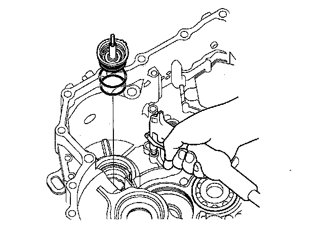

Transmission Housing Disassemble & Service
Reverse Idler Gear Removal/Installation1. Remove the reverse idler gear assembly (A) from the transmission housing.
2. Install the reverse idler gear assembly with the two dowel pins (B) in the transmission housing.
Reverse Idler Gear Disassembly/Inspection/Reassembly
1. Remove the snap ring (A) then remove the thrust washer (B) reverse idler gear (C) needle bearings (D) and thrust washer (E) from the reverse idler gear shaft/holder (F).
2. Inspect the reverse idler gear and gear shaft for excessive wear and damage.
3. Inspect the needle bearings for galling and rough movement.
4. Install the thrust washer and needle bearings over the gear shaft.
5. Install the reverse idler gear in the direction shown.
6. Install the thrust washer, then install the snap ring to secure the idler gear.
Secondary Shaft ATF Feed Pipe Cap Removal
1. Cover the tip of the 1st-hold clutch ATF feed pipe with a shop rag.
2. Apply air pressure to the ATF feed pipe hole of the 1st-hold clutch pressure circuit, and remove the ATF feed pipe cap from the transmission housing.

Secondary Shaft ATF Feed Pipe Cap Installation
1. Install the new O-rings (A) on the ATF feed pipe cap (B).
2. Install the ATF feed pipe cap in the transmission housing. Do not pinch the O-rings.
Secondary Shaft ATF Feed Pipe Cap, Feed Pipe Replacement
1. Remove the ATF feed pipe cap from the transmission housing.
2. Remove the snap ring (A) from the feed pipe cap (B) then remove the feed pipe guide (C) O-rings (D) (E) and 1st clutch ATF feed pipe (F).
3. Replace the 1st clutch ATF feed pipe or 1st-hold clutch ATF feed pipe/ATF feed pipe cap assembly. The 1st-hold clutch ATF feed pipe/ATF feed pipe cap is not available separately.
4. Install the new O-ring (D) over the 1st clutch ATF feed pipe, then install the feed pipe over the 1st-hold clutch ATF feed pipe (G) while aligning the feed pipe tabs (H) with the guide in the cap.
5. Install the new O-ring (E) in the cap and feed pipe guide, then secure the guide with the snap ring.
ATF Filter Removal/Inspection/Installation
1. Remove the three 6.0 mm bolts securing the ATF filter cover (A) and ATF pipe (B).
2. Remove the ATF pipe from the ATF filter cover, and remove the ATF filter (C) from the cover.
3. Clean the ATF filter, then check that it is in good condition, and is not clogged. Replace the ATF filter if it is clogged or damaged.
4. Install the ATF filter with the new O-ring (D) in the filter cover, and, install the ATF pipe in the cover, then install them in the transmission housing.
5. Secure the ATF filter cover with the two bolts (E) then secure the ATF pipe with the bolt (F).
Mainshaft Bearing Removal
Special Tools Required
^ Driver 07749-0010000
^ Attachment, 78 x 80 mm 07NAD-PX40100
1. To remove the mainshaft bearing, expand the snap ring with the snap ring pliers, then push the bearing out. Do not remove the snap ring unless it's necessary to clean the groove in the housing.
Mainshaft Bearing Installation
Special Tools Required
^ Driver 07749-0010000
^ Attachment, 78 x 80 mm 07NAD-PX40100
1. Install the bearing in the direction shown.
2. Expand the snap ring with the snap ring pliers, and insert the bearing part-way into the housing.
3. Release the pliers, then push the bearing down into housing until the snap ring snaps in place around it.
4. After installing the bearing, verify that the snap ring (A) is seated in the bearing and housing groove, and that the ring end gap (B) is 0-7 mm (0-0.28 in.).
Intermediary Shaft Bearing Replacement
Special Tools Required
^ Bearing remover shaft set, 20 mm 07936-3710600
^ Bearing remover shaft handle 07936-3710100
^ Sliding hammer weight 07741-0010201
^ Driver 07749-0010000
^ Attachment, 37 x 40 mm 07746-0010200
1. Remove the intermediary shaft bearing from the transmission housing using the bearing remover shaft set (20 mm) the bearing shaft handle, and the sliding hammer weight.
2. Install the new bearing until it bottoms in the transmission housing using the driver and the attachment (37 x 40 mm).
Park Lever Shaft Bearing Replacement
Special Tools Required
^ Bearing remover shaft, 10 mm 07936-GE00100
^ Bearing remover head, 10 mm 07936-GE00200
^ Sliding hammer weight 07741-0010201
^ Driver 07749-0010000
^ Attachment, 22 x 24 mm 07746-0010800
1. Remove the park lever shaft bearing from the transmission housing using the bearing remover head (10 mm) the bearing remover shaft (10 mm) and the sliding hammer weight.
2. Install the new bearing until it bottoms in the transmission housing using the driver and the attachment (22 x 24 mm).
Selector Control Shaft Bearing Replacement
Special Tools Required
^ Bearing remover shaft, 10 mm 07936-GE00100
^ Bearing remover head, 10 mm 07936-GE00200
^ Sliding hammer weight 07741-0010201
^ Driver 07749-0010000
^ Attachment, 22 x 24 mm 07746-0010800
1. Remove the control shaft bearing from the transmission housing using the bearing remover head (10 mm) the bearing remover shaft (10 mm) and the sliding hammer weight.
2. Install the new bearing in the transmission housing using the driver and the attachment (22 x 24 mm).
Selector Control Shaft Oil Seal Replacement
Special Tools Required
^ Driver 07749-0010000
^ Attachment, 22 x 24 mm 07746-0010800
1. Remove the oil seal from the transmission housing.
2. Install the new oil seal in the transmission housing using the driver and the attachment (22 x 24 mm).